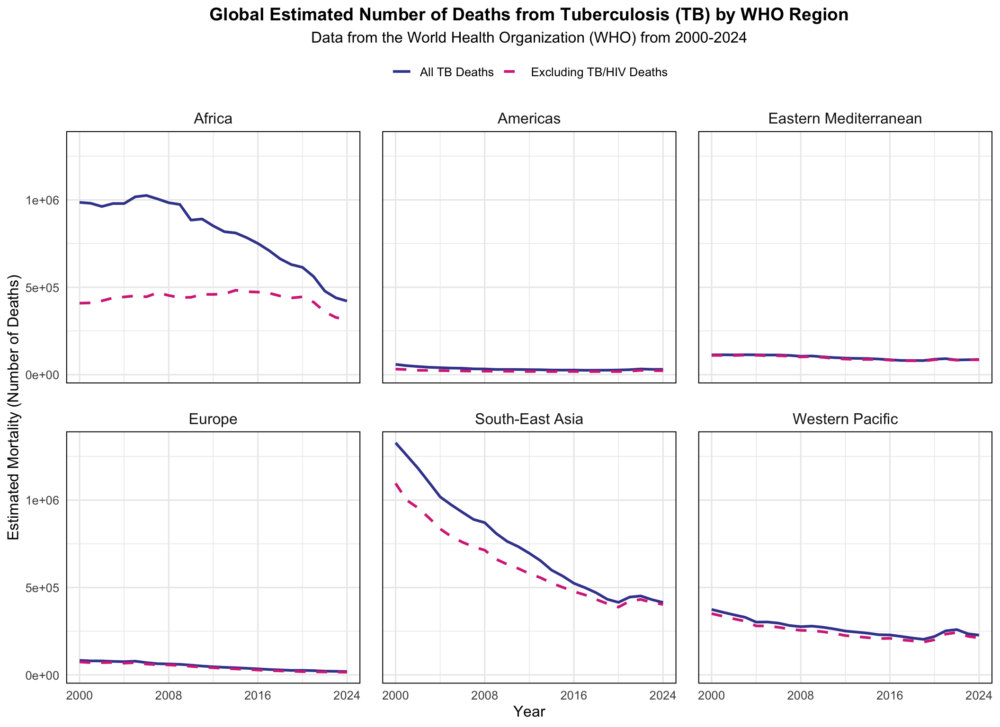

library(tidyverse)
library(tidytuesdayR)
library(here)
library(fishualize)
library(devtools)
library(getTBinR)Week 12 Tidy Tuesday
Introduction
Tidy Tuesday’s Homework
Tidy Tuesday is an international community of R enthusiasts that create visuals from the same dataset. The goal is to practice plotting and learn something new every week. It is amazing to see how many different ways you can visualize the same data.
Load Libraries
Read the Data
tuesdata2 <- tidytuesdayR::tt_load('2025-11-11')
who_tb_data <- tuesdata2$who_tb_dataglimpse(who_tb_data)Rows: 5,117
Columns: 18
$ country <chr> "Afghanistan", "Afghanistan", "Afghanistan", "Af…
$ g_whoregion <chr> "Eastern Mediterranean", "Eastern Mediterranean"…
$ iso_numeric <dbl> 4, 4, 4, 4, 4, 4, 4, 4, 4, 4, 4, 4, 4, 4, 4, 4, …
$ iso2 <chr> "AF", "AF", "AF", "AF", "AF", "AF", "AF", "AF", …
$ iso3 <chr> "AFG", "AFG", "AFG", "AFG", "AFG", "AFG", "AFG",…
$ year <dbl> 2000, 2001, 2002, 2003, 2004, 2005, 2006, 2007, …
$ c_cdr <dbl> 19, 26, 34, 32, 41, 47, 53, 59, 56, 50, 52, 50, …
$ c_newinc_100k <dbl> 35, 50, 65, 61, 78, 90, 100, 111, 107, 95, 99, 9…
$ cfr <dbl> 0.37, 0.35, 0.31, 0.32, 0.28, 0.26, 0.24, 0.21, …
$ e_inc_100k <dbl> 190, 189, 189, 189, 189, 189, 189, 189, 189, 189…
$ e_inc_num <dbl> 38000, 38000, 40000, 43000, 44000, 46000, 48000,…
$ e_mort_100k <dbl> 68.00, 63.00, 57.00, 58.00, 52.00, 47.00, 43.00,…
$ e_mort_exc_tbhiv_100k <dbl> 68.00, 63.00, 57.00, 58.00, 51.00, 47.00, 43.00,…
$ e_mort_exc_tbhiv_num <dbl> 14000, 13000, 12000, 13000, 12000, 11000, 11000,…
$ e_mort_num <dbl> 14000, 13000, 12000, 13000, 12000, 12000, 11000,…
$ e_mort_tbhiv_100k <dbl> 0.17, 0.30, 0.27, 0.29, 0.29, 0.31, 0.32, 0.33, …
$ e_mort_tbhiv_num <dbl> 34, 61, 58, 66, 67, 75, 82, 85, 96, 110, 120, 14…
$ e_pop_num <dbl> 20130323, 20284311, 21378110, 22733047, 23560660…This data on the global tuberculosis (TB) burden estimates comes from the World Health Organization via Tidy Tuesday and getTBinR package by Sam Abbott. The dataset includes TB incidence, mortality, detection rates, and population estimates.
Clean the Data
# Install getTBinR package
#devtools::install_github("seabbs/getTBinR")
# Load WHO TB burden data
tb_burden <- get_tb_burden()
# Create a vector of variable of interest
vars_of_interest <- c("country", "g_whoregion", "iso_numeric", "iso2", "iso3",
"year", "c_cdr", "c_newinc_100k", "cfr", "e_inc_100k",
"e_inc_num", "e_mort_100k", "e_mort_exc_tbhiv_100k",
"e_mort_exc_tbhiv_num", "e_mort_num", "e_mort_tbhiv_100k",
"e_mort_tbhiv_num", "e_pop_num")
# Subset the dataset
who_tb_data <- tb_burden %>%
select(all_of(vars_of_interest))Tidy Tuesday Plot
# Calculate stuff from data
whoregion_totals<-who_tb_data %>%
group_by(g_whoregion, year) %>%
summarise(deaths_all = sum(e_mort_num, na.rm = TRUE), # add up all the deaths from estimated mortality
deaths_noHIV = sum(e_mort_exc_tbhiv_num, na.rm = TRUE)) # add up all deaths without HIV from estimated mortality given
# Faceted plot
ggplot(whoregion_totals, aes(x = year)) +
geom_line(aes(y = deaths_all, color = "All TB Deaths"), linewidth = 1) + # line for all deaths
geom_line(aes(y = deaths_noHIV, color = "Excluding TB/HIV Deaths"),
linewidth = 1, linetype = "dashed") + # line for all deaths excluding HIV
facet_wrap(~g_whoregion) + # facet plots by WHO region
scale_x_continuous(breaks = seq(2000, 2024, by = 8)) + # breaks between years for x-axis spacing to keep labels from overlapping
scale_color_fish_d(option = "Scarus_quoyi", direction = -1) + # for beautiful marine colors that I love
labs(title = "Global Estimated Number of Deaths from Tuberculosis (TB) by WHO Region",
subtitle = "Data from the World Health Organization (WHO) from 2000-2024",
x = "Year",
y = "Estimated Mortality (Number of Deaths)",
color = NULL) + # no need legend label for the two lines
theme_minimal(base_size = 12) +
theme(plot.title = element_text(face = "bold", hjust = 0.5, size = 14),
plot.subtitle = element_text(hjust = 0.5, size = 12),
legend.position = "top",
panel.spacing = unit(1.2, "lines"), # increase space between facets
panel.border = element_rect(fill = NA, linewidth = 0.7), # border around each plot
strip.text = element_text(size = 12)) # making WHO region labels bigger

Figure 1 shows the estimated number of deaths for all Tuberculosis cases (Blue) and for all Tuberculosis cases excluding HIV (Pink) between 2000-2024 across six global WHO regions.
New Thing Learned
This Tidy Tuesday, I tried out faceting in ggplot, which I never fully practiced and learned how to do. I also learned how to put multiple geom_lines on one plot. Played around with theme to make plot visualization easier.
# ggsave(here("Tidy_Tuesday","Week12_tidytuesday", "Output", "Week12_tt.png"), width = 12, height = 6)
# To use next time for practice with a new thing:
# library(ggExtra) # for marginal plots
# library(ggthemes) # for inverse grey theme
# To do before running code:
# Empty your environment before you start working
# Restart R
# .rs.restartR()
# remove whole list in environment
# rm(list = ls())